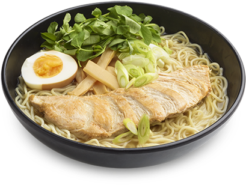

Ramen

Quick Ramen Noodle Soup
This Quick Ramen Noodle Soup only takes 15 minutes to make, and gets its great depth of flavor and richness from two secret ingredients. This is the perfect weeknight meal that’s fast and easy to customize.
Ingredients
- 1 tbsp cooking fat of choice
- 1 tbsp minced garlic
- 1/2 tsp grated ginger
- 4 scallions sliced (white and green parts)
- 1/2 tsp chili sauce or sriracha
- 3 cups chicken stock
- 3 cups beef broth
- 1 tbsp fish sauce
- 1 tbsp soy sauce
- 1 cup water
- 4 eggs optional
- 12 ounce package ramen noodles
Instructions
- Place the cooking fat, garlic, ginger, scallions, and chili sauce in a dutch oven or large pot and cook over medium high heat for 2-3 minutes, until fragrant and the scallions start to soften.
- Add the chicken stock, beef broth, fish sauce, and soy sauce and bring to a boil over high heat. Taste and adjust as necessary (I add about a cup of water to reduce saltiness).
- Add your eggs, if cooking, and the noodles to the boiling soup, and cook for about 3 minutes (the noodles I use require about 3 minutes, but follow the package instructions).
- Serve and enjoy!
This content came from Joanne's beautiful recipe over at
https://www.fifteenspatulas.com/quick-ramen-noodle-soup/